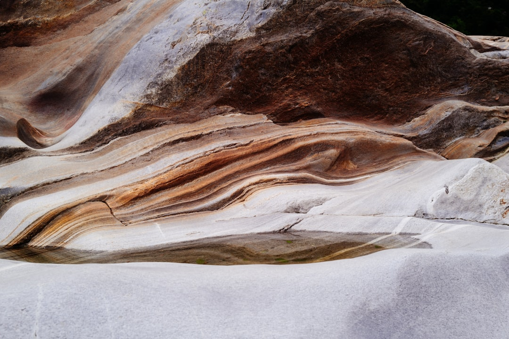
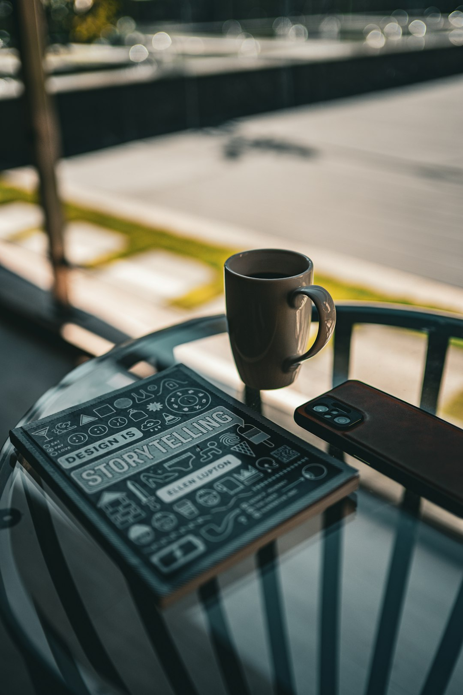
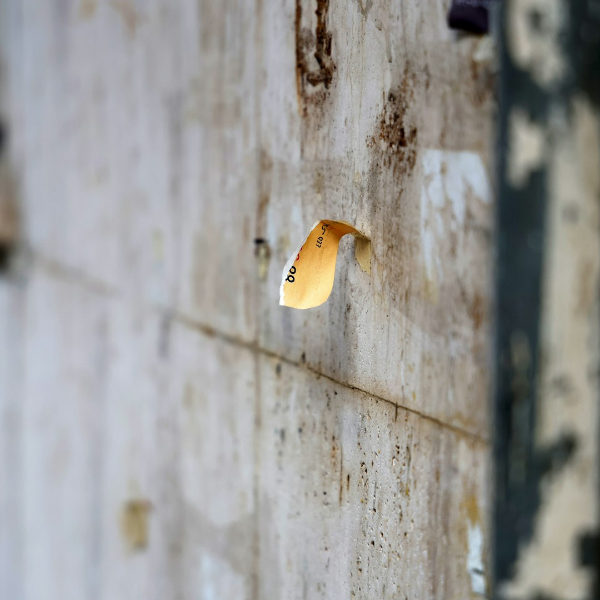
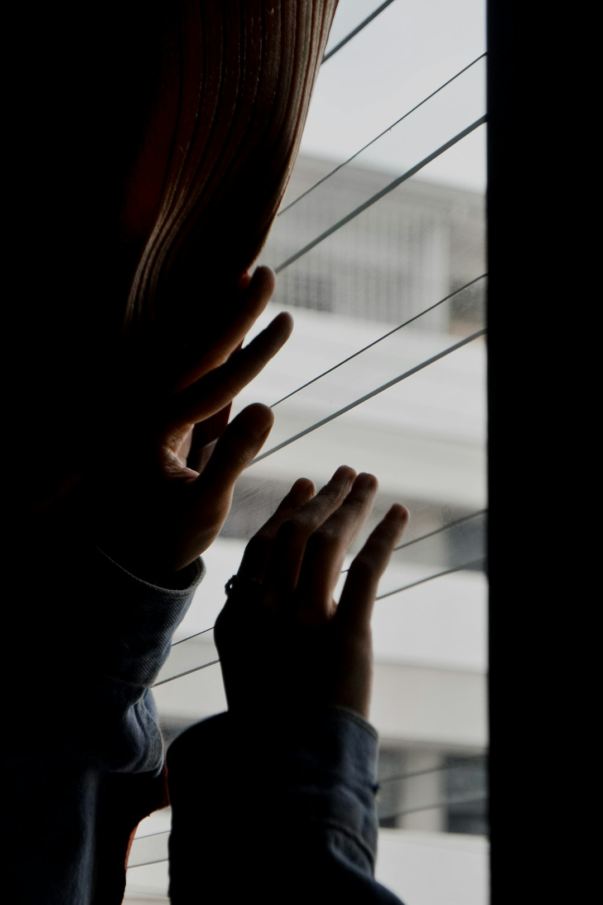

The studio environment profoundly influences photographic outcomes, affecting how subjects feel and consequently how they appear in images. Creating a space that balances professional credibility with relaxed comfort represents one of the most important yet often overlooked aspects of successful photography businesses.
At Salt & Frame, we've intentionally designed an atmosphere that puts clients at ease while demonstrating our commitment to quality and professionalism. This balance allows us to capture authentic, confident expressions that reflect subjects' true character rather than nervous discomfort.
The Psychology of Space
Environmental psychology research demonstrates that physical spaces significantly impact emotional states and behaviors. Cold, clinical environments trigger anxiety and guardedness. Overly casual settings may undermine confidence in professional capabilities. The ideal photography studio occupies the middle ground—welcoming yet capable, comfortable yet impressive.
First impressions form within seconds of entering a space. The entry experience sets expectations for the entire session. Clean, organized reception areas communicate attention to detail. Comfortable seating suggests respect for client time. Visible portfolio work demonstrates capabilities. Each element contributes to overall perception and comfort level.
Natural Light as Foundation
Abundant natural lighting serves dual purposes in studio design. Practically, it provides the bright, flattering illumination essential for contemporary photography aesthetics. Psychologically, natural light creates openness and positivity that artificial lighting struggles to match. Humans respond instinctively to natural light, associating it with outdoor environments and the psychological benefits they provide.
Large windows, skylights, and strategic orientation toward optimal sun exposure maximize natural light availability. Neutral wall colors bounce this light throughout spaces, maintaining brightness even in areas not directly lit. The resulting atmosphere feels airy and spacious, reducing any claustrophobic tendencies that enclosed shooting environments might trigger.
Color Palette Selection
Studio color schemes should reinforce the relaxed yet professional balance. Neutral tones—whites, soft grays, warm beiges—create versatile foundations that don't compete with subjects or distract from photography. These neutrals communicate sophistication and timelessness aligned with contemporary minimalist aesthetics.
Coastal-inspired accent colors add warmth without overwhelming spaces. Soft blues, sandy tones, or muted greens introduce personality while maintaining professional restraint. These accents might appear in furniture upholstery, artwork, or decorative elements, providing visual interest without creating busy environments.
Furniture and Comfort
Seating quality matters more than many studios recognize. Uncomfortable chairs during consultations or while waiting signal that client comfort ranks low in priorities. Quality seating demonstrates respect and encourages relaxation. Options should accommodate different body types and preferences—some clients prefer firm support while others favor softer cushioning.
Beyond seating, consider other comfort elements. Climate control maintaining consistent comfortable temperatures prevents distraction. Refreshment offerings—quality coffee, tea, water—show hospitality and provide nervous clients with comforting activities. Mirrors in changing or preparation areas allow subjects to check appearances, building confidence before shoots begin.
Organization and Cleanliness
Professional credibility relies heavily on organizational standards. Equipment should be properly stored yet easily accessible. Cables should be managed and secured. Surfaces should be clean and clutter-free. This organization communicates competence and attention to detail while preventing accidents or disruptions during sessions.
Regular cleaning routines maintain professional appearances. Dusty surfaces or dirty windows undermine the bright, clean aesthetic we aim to project. Daily attention to these details ensures the studio always presents optimally, regardless of last-minute client visits or consultations.
"A well-organized studio doesn't just look professional—it allows photographers to focus entirely on clients rather than searching for equipment or apologizing for mess."
Music and Ambient Sound
Auditory environment significantly affects mood and relaxation. Carefully curated background music creates pleasant atmospheres without intruding on conversations or becoming distracting. Volume should remain low enough for easy communication while filling silence that might feel awkward.
Music selection depends on brand character and client demographics. Salt & Frame typically favors contemporary instrumental music—clean, sophisticated, non-intrusive. The absence of lyrics prevents distraction while modern production aligns with our contemporary aesthetic. Some sessions benefit from no music at all, particularly when conversation and direction require clear communication.
Showcasing Your Work
Displaying previous work serves multiple purposes. It demonstrates capabilities and style, helping clients visualize potential results. It provides conversation starters that ease initial nervousness. It inspires clients by showing what's possible, often elevating their expectations and excitement.
Display methods matter. Large format prints demonstrate quality and create impressive visual impact. Gallery-style hanging suggests fine art sensibility. Digital displays allow showcasing broader portfolios while maintaining clean aesthetics. Mix display methods to show versatility while maintaining cohesive presentation.
Separate Zones for Different Activities
Well-designed studios delineate different functional areas. Reception spaces for initial greetings and consultations should feel separate from shooting areas. Preparation or changing areas provide privacy. Behind-the-scenes equipment storage remains hidden from client view. This separation prevents clients from feeling they're navigating working workshops rather than professional studios.
Open floor plans can achieve this separation through strategic furniture placement, partial walls, or curtains. The goal is creating distinct zones without requiring extensive square footage or construction. Even modest spaces benefit from thoughtful zoning that guides client flow and creates appropriate atmospheres for different activities.
Personal Touches Without Clutter
Studios should reflect personality without becoming cluttered or unprofessional. Carefully selected art pieces, a distinctive plant arrangement, or unique architectural features add character while maintaining clean aesthetics. These elements make spaces memorable and reinforce brand identity.
The minimalist approach we embrace means each decorative element should justify its presence. Does it contribute to the desired atmosphere? Does it enhance rather than distract? Would clients notice if it disappeared? This critical evaluation prevents accumulation of unnecessary items that gradually undermine clean design principles.
Temperature and Air Quality
Environmental comfort extends beyond visual aesthetics to physical conditions. Temperature control maintains comfortable conditions regardless of external weather or equipment heat. Photography lighting can raise temperatures significantly; adequate cooling systems prevent uncomfortable shooting conditions that affect both subject comfort and photographer stamina.
Air quality matters particularly for longer sessions. Proper ventilation prevents stuffiness. Air purifiers remove dust and allergens that might trigger discomfort. Fresh air circulation, when possible through windows, provides additional psychological benefits associated with outdoor environments.
Wayfinding and Clear Communication
Even the most beautifully designed studio causes stress if clients can't navigate it easily. Clear signage directs visitors to reception, restrooms, changing areas, or exits. This wayfinding should match overall aesthetic—refined typography on neutral backgrounds maintains design consistency while providing practical guidance.
Communication extends to scheduling, preparation instructions, and session expectations. Clear pre-session emails outlining what to bring, when to arrive, and what to expect reduce anxiety. In-studio information about processes or timelines helps clients feel oriented and comfortable throughout their experience.
Flexibility for Different Client Needs
Professional studios accommodate diverse client needs and preferences. Adjustable lighting setups allow quick transitions between different styles. Multiple shooting backgrounds provide variety. Flexible scheduling accommodates various client schedules. This adaptability demonstrates client-centered approaches that prioritize individual needs over rigid studio systems.
Accessibility considerations ensure all clients can comfortably use studio spaces. Level entry or ramp access, adequate space for mobility devices, and accessible restrooms demonstrate inclusive values while practically expanding potential client base. These considerations align with contemporary expectations around accessibility and inclusion.
Staff Training and Client Interaction
Physical environment represents only half of atmosphere creation. Staff interactions equally influence client comfort and experience. Training emphasizes welcoming approaches, clear communication, and reading client emotional states to adjust interaction styles appropriately.
Some clients prefer chatty, friendly interactions while others appreciate quiet professionalism. Skilled staff recognize these preferences quickly and adapt accordingly. This emotional intelligence creates personalized experiences where clients feel understood and valued beyond transactional relationships.
"The most beautiful studio in the world can't compensate for staff who make clients feel rushed, misunderstood, or undervalued."
Behind-the-Scenes Organization
Areas clients don't see still impact overall operations and indirectly affect their experiences. Well-organized equipment storage allows quick access without disrupting sessions. Digital asset management systems ensure efficient post-production workflows. Administrative areas maintain business operations smoothly, preventing session delays or scheduling confusion.
These operational elements might seem disconnected from atmosphere, but inefficient systems create stress that photographers carry into client interactions. Smooth, organized operations allow complete focus on creative work and client service rather than constant problem-solving or searching for missing items.
Continuous Improvement and Feedback
Studio atmosphere should evolve based on client feedback and changing needs. Regular surveys, informal conversations, and observation of client behaviors provide insights into what works and what needs adjustment. This feedback loop demonstrates commitment to excellent experiences while revealing opportunities for enhancement.
Annual or biannual studio audits assess whether physical spaces still serve intended purposes. Design trends evolve, equipment needs change, and client expectations shift. Periodic refreshes maintain contemporary relevance while preserving core brand character and proven atmosphere elements.
Balancing Investment and Returns
Creating ideal studio atmospheres requires investment, but returns justify costs through improved client experiences, higher booking rates, and premium pricing justification. Clients willingly pay more for services delivered in professional, comfortable environments because they perceive higher value and expect better results.
Prioritize investments that most significantly impact client experience. Natural lighting improvements, quality seating, and excellent climate control rank higher than decorative elements. Start with functional comfort foundations before adding aesthetic enhancements. This practical approach ensures limited budgets achieve maximum impact on actual client satisfaction.
Conclusion
The relaxed yet professional studio atmosphere represents a competitive advantage in contemporary photography businesses. By thoughtfully designing spaces that balance comfort with credibility, utilizing natural lighting for both practical and psychological benefits, maintaining meticulous organization, and training staff in excellent client interaction, photographers create environments where authentic, confident images naturally emerge.
At Salt & Frame, we've discovered that the care invested in atmosphere pays dividends through every client interaction. Subjects arrive relaxed rather than nervous, sessions progress smoothly rather than awkwardly, and resulting images capture genuine expressions rather than forced smiles. This approach aligns perfectly with our commitment to contemporary aesthetics, natural lighting, and the warm, approachable yet sophisticated character that defines Australian creative excellence.
Experience Our Welcoming Studio Atmosphere
Visit Salt & Frame and discover how the right environment enhances creative results.
Book Your Session